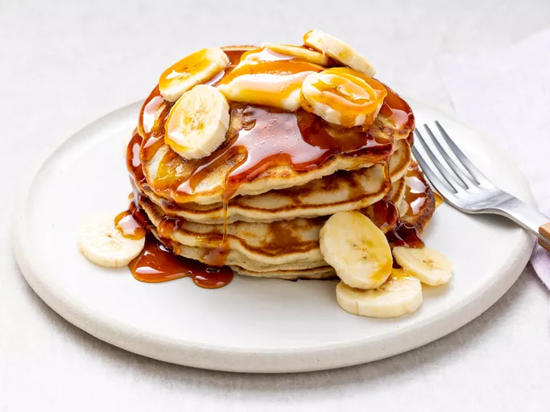

Banana Pancake Recipe

Fluffy banana pancakes made from scratch with mashed ripe bananas that are
ready in minutes for a delicious twist on ordinary pancakes.
Ingridients You Need
- Flour
- Sugar
- Baking Powder
- Salt
- An Egg
- Milk
- Vegetable Oil
- Bananas
How to Make Banana Pancakes
Mix
-
Combine your dry ingredients in one bowl and your wet ingredients in
another bowl. Add the dry ingredients to the bowl with the wet
ingredients, then stir until they're incorporated. It's OK if your
batter is slightly lumpy.
Cook
-
Pour the batter in ¼ cup portions onto a lightly oiled pan or griddle
over medium-high heat. Cook for a few minutes, flip with a spatula, and
cook for another few minutes
Serve
-
Serve your banana pancakes immediately. They're delicious alone or with
your favorite pancake toppings.
Home